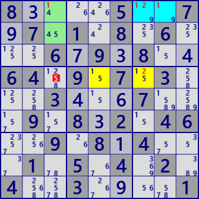

ALS XY-Wing
ALS XY-Wingは3つのALSを用いる解析アルゴリズムです。
次のALS Chainの3ALSの場合です。
ALS A、B、Cについて、AとCにはRCC xがあり、BとCにはRCC yがあるとします。さらにAとBにはともに数字ｚがあるとします。
この状態で、A、B内の全てのzと関係するzがALS外にあるとき、このzは除外できます。
もしもALS外のzが真とすると、ALS A、BはLockedSetになり(xはAに、yはBに含まれる）、
ALS Cではセル数に対し候補数字が足りなくなります。
ALSを用いる解析アルゴリズムの特徴として、ALSが利用できる場面では、多くの場合に同時に多数の解が存在します。
また、ALS系の他の解析アルゴリズム解も存在します。ALS XY-Wingでもその性質があります。

ALS XY-Wingの例です。

8....5..7.7.1.8.6...6.9.8..64.9.7.3...3...7...9.8.2.46..9.8.4...1.5.4.2.4..3....1
4..1....39.7.3.54..539..7....5...3..2963.7154..8...6....4..389..39.4.2.56....9..7